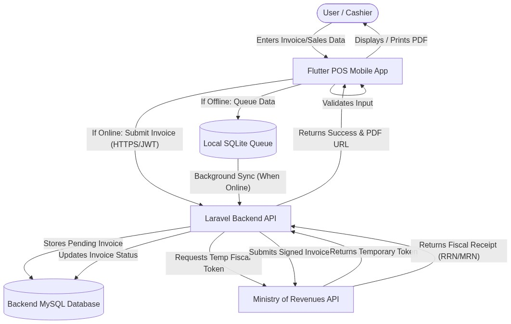
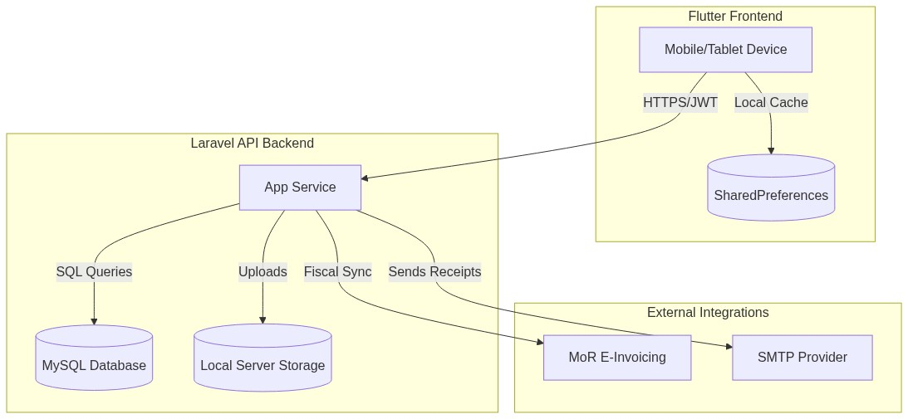
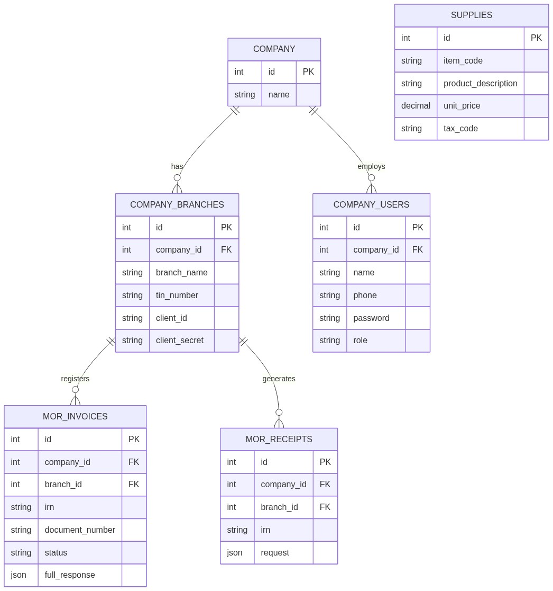

Prepared By: Information Network Security Administration (INSA) 2025 Submitted by: Micro Sun and Solutions PLC (MSS) Submitted to: Information Network Security Administration (INSA)
Micro Sun and Solutions PLC (MSS) is an IT company founded in January 1997, specializing in hardware and network solutions. We offer customized solutions tailored to various industries, including government, banking, and telecom. We focus on high-quality software development and implementation, providing comprehensive corporate solutions across multiple sectors. Our company emphasizes 100% customer satisfaction and aims to deliver quality products and services at an affordable cost.
This document provides an overview of the Web and Mobile Application Security Testing Requirements Document, compiled for the Information Network Security Administration (INSA). The application in scope is the Deresegn Point of Sale (POS) and SaaS Application, which integrates with the Ethiopian Ministry of Revenues (MoR) e-invoicing system.
The owner of this document is the Deresegn Engineering and Compliance Department.
The scope encompasses the security mechanisms, architectural layouts, and data flows of the Deresegn POS/SaaS application: - The Flutter-based mobile client interfaces. - The Laravel 8 (PHP) backend REST API. - The local SharedPreferences storage handling offline queuing. - The integration with the Ministry of Revenues (MoR) e-invoicing API.
The objective of requesting this security certificate is to comply with the national cybersecurity mandates established by the Information Network Security Administration (INSA). Obtaining this certification ensures that the Deresegn Point of Sale (POS) and SaaS Application meets the rigorous security, integrity, and confidentiality standards required before public rollout and handling sensitive MoR fiscal data.
The following legal prerequisites and administrative documents are mandatory prior to the finalization of the INSA audit: 1. Updated Trade License: [Placeholder for Trade License ID] 2. TIN Number or National ID: [Placeholder for TIN Number] 3. System/Product Patent Certificate (if available): [Placeholder for Patent]



Key Entities and Definitions:
- COMPANY & COMPANY_USERS: COMPANY represents the master tenant. COMPANY_USERS contains name, phone, password, and role.
- COMPANY_BRANCHES: Represent the physical stores tied to a company. They contain the critical tin_number, client_id, and client_secret (encrypted via model casts).
- MOR_INVOICES: The central fiscal transactional record. Holds irn, document_number, status, and the full_response (JSON). Tied to both a Branch and a Company.
- MOR_RECEIPTS: Represents actual payments synced with the MoR.
- SUPPLIES: Represents inventory items, holding item_code, unit_price, and tax_code.
Authentication utilizes unique Phone Numbers and Passwords tied to specific Company IDs.
The application relies on users to set their password during registration or account creation. There is currently no mechanism that forces a user to change their password upon their first login.
Each user registers with a unique Phone Number. The system relies on administrative procedures to discourage the sharing of accounts between cashiers.
Users are expected to keep their credentials confidential.
The backend API enforces a minimum password length of six (6) characters during registration and login. Passwords are mathematically hashed exclusively using Laravel's native Bcrypt implementation (Hash::make). There are no programmatic requirements for special characters, numbers, or mixed casing.
The application does not currently enforce password expiration or rotation. Passwords remain valid indefinitely unless manually changed by the user or an administrator.
Password history is not tracked in the database. Users are permitted to reuse old passwords if they choose to change them.
If a user submits an incorrect password, the API returns a standard 401 Unauthorized response. The application currently relies on the hosting provider's infrastructure to handle mass brute-force attacks, as API-level rate limiting (ThrottlesLogins) is not explicitly implemented on the authentication endpoints.
Because invalid login attempts are not systematically counted in the database, there is no automatic lockout duration enforced on user accounts.
The JWT Time-To-Live (TTL) is configured to expire after 60 minutes. Once the 60 minutes elapse, the token is invalidated and the user must re-authenticate.
client_secret, api_key) in the company_branches table are encrypted at rest using Laravel's model casting mechanism (encrypted).Validator::make) to ensure required fields and correct data types are passed..env).client_secret and api_key) from API JSON responses using Laravel's $hidden array on Eloquent models.The application relies on standard Laravel and Flutter linting alongside standard functional testing. Any comprehensive penetration testing is performed prior to major production releases locally.
The application supports the Android operating system.
* Minimum Supported OS: Android 5.0 (Lollipop) - API Level 21 (Flutter default minSdkVersion).
* Maximum Supported OS: Android 14 - API Level 34 (Flutter default targetSdkVersion).
(Note: iOS is currently out of scope for this specific audit, but the framework is cross-platform capable).
The Deresegn mobile application is a hybrid cross-platform application developed using the Flutter framework (SDK ^3.12.2) and Dart language.
* State Management & Routing: Handled by the get plugin (GetX).
* Network & API Communication: Managed via the dio HTTP client.
* Storage & Native Interaction: Uses flutter_secure_storage for securely caching tokens, and shared_preferences for managing the local offline invoice queue. The application compiles directly to native ARM code, ensuring high performance without relying on web-views for core business logic.
The application utilizes the logger package to track user activity, network state changes, and security events.
* Client-Side Logging: Important application state changes (e.g., Network restored, attempting to sync offline queue, Company authentication required) and HTTP request failures (e.g., Retrying GET path after X seconds) are logged to the console for debugging.
* Production Alerting: In production, standard HTTP 4xx and 5xx errors are captured by the backend server logs.
We request that the INSA audit specifically focuses on the following security-critical workflows:
1. Invoice Generation: The core flow of generating, validating, and submitting fiscal invoices securely to the MoR.
2. The Offline-to-Online Sync Mechanism: Validating the security of invoices temporarily queued in shared_preferences during network outages.
3. MoR Token Exchange: The backend process of reading the Branch TIN and Password, requesting a temporary MoR token, and signing the fiscal receipt.
4. Multi-Tenant Authentication: The JWT-based login flows (/api/company/login, /api/branch/login) ensuring strict data isolation between companies and branches.
https://api.deresegn.com).The application strictly adheres to the fiscal and invoicing regulations mandated by the Ethiopian Ministry of Revenues (MoR). This requires exact formatting of JSON payloads, strict transmission of tax codes, and secure handling of Branch TINs and passwords.
/api/login endpoints in the application layer.The backend exposes RESTful APIs utilizing HTTP methods and JSON formats.
Authorization: Bearer <token> header.The primary integration is the Ethiopian Ministry of Revenues (MoR) e-invoicing API.
Endpoints are protected by JWT middleware to ensure that only authenticated companies and their respective users can access their financial records.
The mobile client interacts with the backend over HTTPS (https://api.deresegn.com).
GET /api/companies Response: Array of objects [{ "id": integer, "company_name": string }]
POST /api/company/register
{ "company_name": string (optional), "tin_number": string (optional), "owner_name": string (optional), "phone": string (required), "password": string (required, min: 6) }Response: { "user": object, "token": JWT } (201 Created)
POST /api/company/login
{ "phone": string (required), "password": string (required), "company_id": integer (optional), "tin_number": string (optional) }Response: { "user": object, "token": JWT }
POST /api/branch/login
{ "tin_number": string (required), "password": string (required) }Response: { "branch": object, "token": JWT }
POST /api/branches (Requires Bearer Token)
branch_name, location, phone_number, email, tin_number, client_id, client_secret, api_key, password, private_key (file), certificate (file).GET /api/suppliesPOST /api/suppliesAll routes below (except /api/refresh/token) require a Branch-Id header to resolve the specific branch's MoR credentials.
POST /api/loginclient_secret and api_key.Branch-Id: <branch_id>Response: Forwards the MoR authorization token.
POST /api/invoice/register
Branch-Id: <branch_id>, Mor-Token: <token>Response: Forwards MoR response (e.g., success, validation errors).
POST /api/cancel/invoice
Headers: Branch-Id: <branch_id>, Mor-Token: <token>
POST /api/irn/verfiy
Headers: Branch-Id: <branch_id>, Mor-Token: <token>
POST /api/receipt/sales & POST /api/receipt/withholding
Headers: Branch-Id: <branch_id>, Mor-Token: <token>
POST /api/refresh/token
GET /api/invoices & GET /api/invoices/{id}GET /api/receipts/{type}/{value} rrn, mor, irn).| Name | Role | Address (Email and Mobile) |
|---|---|---|
| Amanuiel Tilahun | CIO | Email: tilahunamanuiel0@gmail.com Mobile: +251911058179 |
| Name of the Assets to be Audited | APK/official link | Test Account | Static Analysis | Dynamic Analysis | Automated Source Code Analysis |
|---|---|---|---|---|---|
| Deresegn POS Mobile App | APK Download: GitHub Release v1.0.0 Source Code (Static Analysis): GitHub Repository |
Company login: Phone: 25191134567 Password: password123 Company ID: 9 Branch login: Tin: 0000037187 Password: Maru@123 |
Yes | Yes | Yes |
| Deresegn Backend API | https://api.deresegn.com | (Tested via mobile app accounts above) | No | Yes | No |
Micro Sun and Solutions PLC is fully committed to maintaining a robust security posture for the Deresegn POS/SaaS application. Through the implementation of strict JWT authentication, secure local storage, local offline queuing, and encrypted MoR token management, we have designed the application to protect sensitive fiscal data at rest and in transit. We welcome INSA's comprehensive security audit to validate our compliance, strengthen our service delivery, and reduce our exposure to cyber threats.